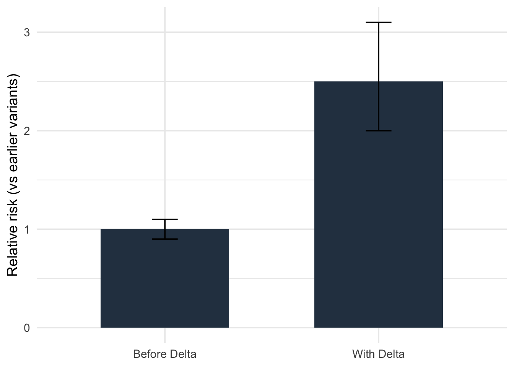
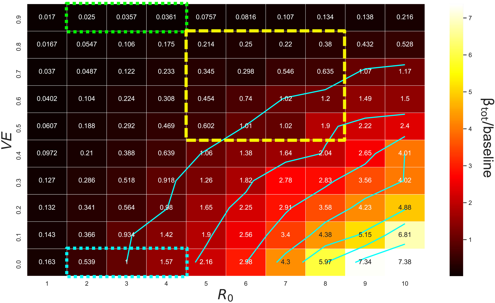

Remember When Borders Felt Unbreakable?
For much of 2020–2021, Australia’s border system felt like a fortress.
Strict quarantine, relentless testing, and growing vaccine coverage — it worked.
Outbreaks were rare. The world watched, impressed.
Then came Delta — the variant that changed the rules overnight.
Vaccines still worked, but Delta could slip through them. Suddenly, the idea of “enough protection” got complicated.
So let’s ask the key question:
How much protection — through vaccines and coverage — do we really need to stay safe when leaks become more likely?
The Ground Beneath the Data
To explore this, I built on: 1. Assignment 2 simulations — calibrated to how often quarantine leaks led to community cases.
2. Research from Zachreson et al. (2022) — their modelling showed how Delta reshaped quarantine risk.
Read it here on Science Advances →
They looked at a world where Delta’s R₀ — its reproduction rate — doubled from earlier strains.
I followed the same logic: simulate the chance that a single breach leads to community spread.
| Scenario Variable | Meaning |
|---|---|
| Outcome | Chance (%) that one quarantine leak causes community spread |
| Vaccine Coverage | 60 %, 70 %, 80 %, or 90 % of people vaccinated |
| Vaccine Strength | How well it blocks spread — 40 %, 60 %, or 80 % |
| Assumptions | People mix randomly (no lockdown effects); rules stay constant |
When “Safe” Stopped Being Safe
Figure Figure 1 shows how Delta flipped the odds.
Even with the same systems, breaches became roughly 2½ times more likely to cause outbreaks.
This figure captures the turning point. The system didn’t fail — the virus evolved faster than our defences.
What Does “Enough” Look Like?
If Delta raised the bar, how high must we climb?
@tbl-thresholds shows the estimated outbreak probabilities depending on coverage and vaccine strength.
| Thresholds for Safer Operation | ||
|---|---|---|
| Coverage | Vaccine Blocks Spread (%) | Outbreak Risk (%) |
| 60% | 80% | 20 |
| 70% | 80% | 14 |
| 80% | 80% | 9 |
| 90% | 80% | 5 |
| 60% | 60% | 24 |
| 70% | 60% | 18 |
| 80% | 60% | 12 |
| 90% | 60% | 8 |
| 60% | 40% | 28 |
| 70% | 40% | 22 |
| 80% | 40% | 16 |
| 90% | 40% | 10 |
A clear rule emerges:
When 80% of people are vaccinated with a vaccine that blocks at least 60% of spread, the risk drops to about 1 in 10.
Drop the vaccine strength to 40%, and even full coverage won’t save you.
So yes — coverage matters, but blocking transmission matters more.

“These results echo the patterns found in Zachreson et al. (2022), whose national-scale model revealed similar coverage-efficacy thresholds (Figure 2 below).”
The Lesson of Delta
It’s tempting to think: vaccinate the border staff, problem solved.
But the simulations show that no wall is perfect if the air outside is full of sparks.
Safety now depends on two layers:
At the border — vaccines that stop the virus from moving.
In the community — enough coverage to smother leaks fast.
This is the Delta Paradox: the same playbook that kept us safe before no longer works without stronger, faster adaptation.
Why It Matters Now
Delta’s story isn’t history — it’s a warning.
Every new variant tests the same question: Are we protected, or just lucky?
The takeaway:
Delta multiplied breach risk by about 2½×.
To restore safety, we need ≥60% blocking efficacy and ≥80% coverage.
Coverage alone is not the cure; adaptability is.
As new variants come, the real measure of safety won’t be walls or rules —
it’ll be how quickly we learn to rebuild them.
References
- Zachreson, C., Shearer, F. M., Price, D. J., Lydeamore, M. J., McVernon, J., McCaw, J., & Geard, N. (2022). COVID-19 in low-tolerance border quarantine systems: impact of the Delta variant of SARS-CoV-2. Science Advances, 8(14), eabm3624. https://www.science.org/doi/10.1126/sciadv.abm3624